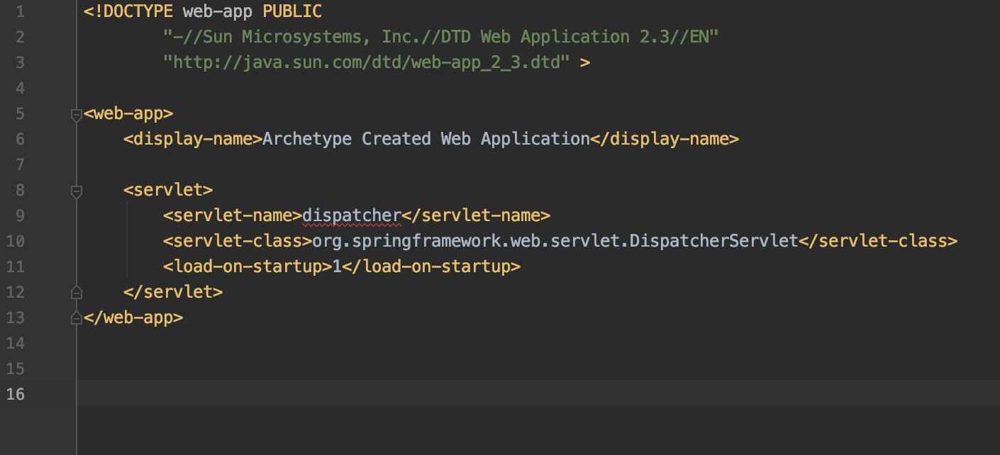
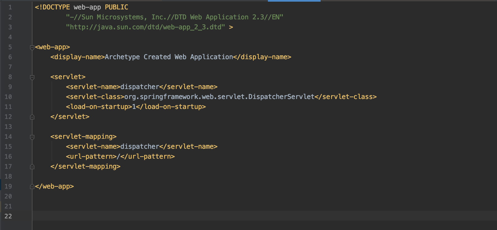
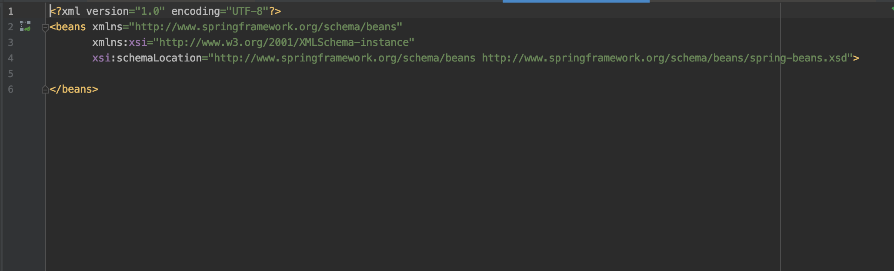
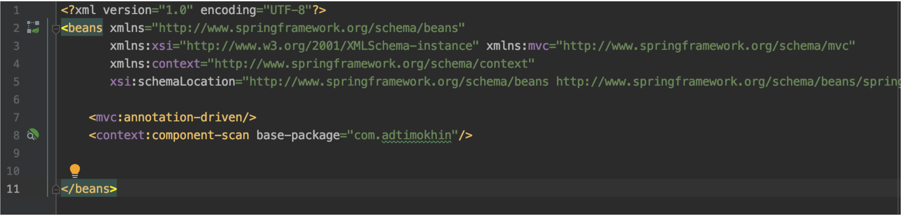

web.xml and dispatcher-servlet.xml
Let’s write a few configuration files!
Now I will show how to create two configuration files necessary for the application's opperation. I will start by showing how to write them in XML. That way you can understand how similar the two methods really are.
web.xml
Inside the WEB-INF folder we have a XML file web.xml. That is a file that Spring uses to create a few object types needed to run our web application.
One of such types is servlets.
What is a servlet?
A server will get requests from users and send them responses. Servlets are Java objects that handle requests by identifying what URL they have and based on that passing them to different methods (which we will be creating) to carry out the action.
In basic applications, there is only one servlet that is mapped to work with all URLs - it is called dispatcher servlet.
Let’s create the one servlet that we will need.
Steps for writing required xml configuration files.
Step One: Add required dependency
To get needed functionality for java servlets to operate we need an extra dependency.
Do the following:
- Add javax.servlet-api dependency to your poxm.xml
pom.xml:
<dependency>
<groupId>javax.servlet</groupId>
<artifactId>javax.servlet-api</artifactId>
<version>4.0.1</version>
<scope>provided</scope>
</dependency>
Step Two: Create servlet
Inside web.xml file (which you should find in WEB-INF folder)write the following:
This is how your web.xml file should look like now:
We will not touch on the <web-app></web-app> tags. We are now interested in information in between <servlet></servlet> tags.
What we have created in the web.xml is a servlet of a class DispatcherServlet with the name “dispatcher”.
Pretty self-explanatory.
<load-on-startup></load-on-startup> tags identify the priority in which the servlets are loaded into Spring Container. However, be aware that if you want to specifically tell Spring to load your servlet when your application starts, put an integer greater or equal to 0 in between the <load-on-startup></load-on-startup> tags.
Step Three: Add mapping for dispatcher servlet
Write the following code to add the mapping which the servlet will work with:
This is how your web.xml file should look like now:
Mapping of a servlet is basically a number of URLs to which this exact servlet will react.
<url-pattern></url-pattern> tags identify what URL should start with so that it will be mapped by our dispatcher servlet. If we put “/” then the servlet will be mapped to all urls.
This is basically it for the web.xml file. Now we need to create a separate xml file for our servlet.
Step Four: Create dispatcher-servlet.xml file
Inside WEB-INF create a new file and name it dispatcher-servlet.xml. It is important that the filename starts with the name of the servlet, or else Spring will not identify that file as a servlet configuration file.
Select “Spring Config” option to create a Spring configuration file for our servlet.
You should end up with a file that looks something like this:
dispatcher-servlet.xml:
Step Five: add required tags inside dispatcher-servlet.xml
In order for our application to run we will add two tags inside <bean></bean> tags.
dispatcher-servlet.xml:
<mvc:annotation-driven/> is a tag that enables us to use special annotations like:
@Component, @Repository, @Service, @Controller
<context:component-scan base-package=”...”/> is a tag that tell Spring where we will have our files with annotations mentioned above.
We have already seen annotation @Component. Others we will cover later in the course.
We have created a fully functioning servlet.
Next, I will rewrite these configuration files with Java. I wrote those two in XML just to show you how XML works. If you wish to turn the two configuration files we wrote now into Java configs that is how you can do it:
Steps for writing required Java configuration files.
Please, before attempting this part of the course, complete the previous section about writing the same files using XML. The first step is definately the one to complete, as it adds needed dependencies.
Step One: Create WebAppInitializer class
Create a package called config inside your base package (in my case that is com.adtimokhin). That config folder is the package where you will store java configuration files.
WebAppInitializer class should extend AbstractAnnotationConfigDispatcherServletInitializer
Also do not forget to override methods. You should end up with a class that looks like this:
WebAppInitializer.class:
public class WebAppInitializer extends AbstractAnnotationConfigDispatcherServletInitializer {
@Override
protected Class<?>[] getRootConfigClasses () {
return new Class[0];
}
@Override
protected Class<?>[] getServletConfigClasses () {
return new Class[0];
}
@Override
protected String[] getServletMappings () {
return new String[0];
}
}
AbstractAnnotationConfigDispatcherServletInitializer class performs the role of web.xml file.
getServletMappings() - method that contains all the mapping starters to which this servlet will respond. Let’s put there our only url from web.xml:
getServletMappings() in WebAppInitializer.class:
// ...
@Override
protected String[] getServletMappings () {
return new String[]{"/"};
}
// ...
Inside getServletConfigClasses() we will specify configuration files that we will create for our dispatcher servlet. But currently we don't have any.
Method getRootConfigClasses() we will not talk about in this course.
We forgot to tell Spring that we want this servlet to be the first to be loaded into Spring Context. To do so, we need to add an annotation @Order .Just like this:
declaration of WebAppInitializer.class:
@Order (1)
public class WebAppInitializer extends AbstractAnnotationConfigDispatcherServletInitializer {
// ...
}
Number 1 does the same as 1 in <load-on-startup> </load-on-startup>tag from web.xml
Now let’s add those special tags from dispatcher-servlet.xml file.
Step Two: Create WebConfig class
This configuration class will do some of the functionality that we would have done inside dispatcher-servlet.xml file.
Every Java configuration file should be annotated with @Configuration. Otherwise Spring will not view that file as config.
WebConfig should implement WebMvcConfigurer
WebConfig.class:
@Configuration
public class WebConfig implements WebMvcConfigurer {
}
To add the functionality that tags from the dispatcher-servlet.xml file are giving us, we need to add 2 annotations:
@EnableWebMvc - it does the same as
<mvc:annotation-driven/>
@ComponentScan(basePackages = "com.adtimokhin") -
it does the same as
<context:component-scan base-package="com.adtimokhin"/>
Now your WebConfig class looks like this:
WebConfig.class:
@Configuration
@EnableWebMvc
@ComponentScan (basePackages = "com.adtimokhin" )
public class WebConfig implements WebMvcConfigurer {
}
Step Three: make our dispatcher servlet use WebConfig class
To make WebConfig be used as an actual configuration file by our dispatcher servlet we need to add it to a list of configuration files of the servlet!
Inside WebAppInitializer there is a method called getServletConfigClasses(). Let’s add our WebConfig to there:
WebAppInitializer.class:
// ...
@Override
protected Class<?>[] getServletConfigClasses () {
return new Class[]{WebConfig.class};
}
// ...
Now we are all done!